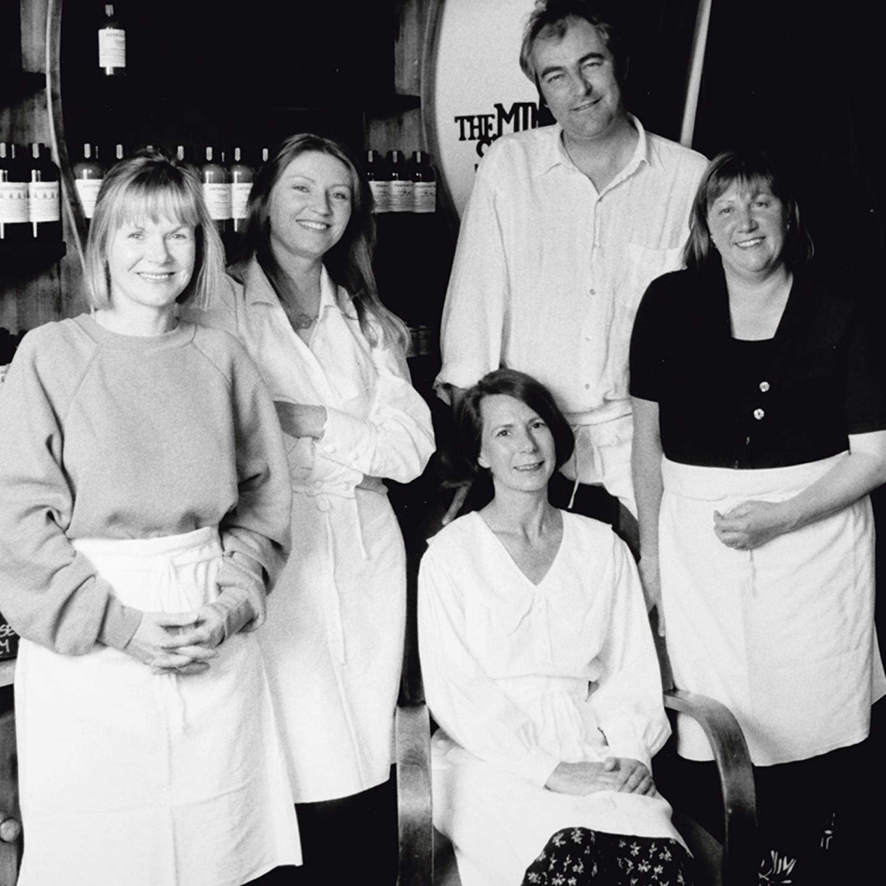

마크 콘스탄틴(Mark Constantine), 모 콘스탄틴(Mo Constantine), 로웨나 버드(Rowena Bird), 헬렌 앰브로센(Helen Ambrosen), 리즈 베네트(Liz Bennett), 폴 그리브스(Paul Greaves)가 함께 창립했습니다.
마크는 모발학자로, 리즈는 뷰티 테라피스트로 같은 헤어&뷰티 샬롱에서 근무했습니다. 이들의 공통 관심사는 환경친화적인 제품이었고, ‘콘스탄틴 앤 위어(Constantine and Weir)’ 라는 회사를 함께 설립합니다. 회사가 성장하면서 헬렌 앰브로센, 로웨나 버드, 모 콘스탄틴, 폴 그리브스가 합류합니다.
1995년, 러쉬는 영국에
항구도시 풀(Poole)에서
탄생했습니다.
항구도시 풀(Poole)에서
탄생했습니다.
그들은 더 나은 브랜드의 확신을 갖고, 1987년 화장품 통신판매업체인 ‘코스메틱 투 고 (Cosmetics to Go)’를 설립합니다.
제품 카탈로그를 발행하고 전화와 우편으로 주문을 받았습니다. 당시 선보인 배쓰 밤, 샴푸 바, 마사지 바는 지금까지도 사랑을 받고 있습니다. 초기에 성공한 듯했지만, 많은 주문 접수에 대처할 시스템을 마련하지 못하여 아쉬운 작별을 고합니다.
제품 카탈로그를 발행하고 전화와 우편으로 주문을 받았습니다. 당시 선보인 배쓰 밤, 샴푸 바, 마사지 바는 지금까지도 사랑을 받고 있습니다. 초기에 성공한 듯했지만, 많은 주문 접수에 대처할 시스템을 마련하지 못하여 아쉬운 작별을 고합니다.

6명의 공동 창립자들은 그 동안 쌓은 경험을 바탕으로 새로운 브랜드 러쉬(Lush)를 시작합니다.
현재 러쉬는 전 세계 50여 개국에서 900여 개 매장을 운영하고 있습니다. 한국은 러쉬의 네 번째 해외 진출 국가입니다. 2002년 12월 24일 크리스마스 이브에 첫 선을 보였습니다.
현재 전국 70여 개 매장(*스파 매장 2개)와 디지털 채널을 통해 러쉬의 철학이 담긴 제품과 긍정의 에너지를 나누고 있습니다.
현재 러쉬는 전 세계 50여 개국에서 900여 개 매장을 운영하고 있습니다. 한국은 러쉬의 네 번째 해외 진출 국가입니다. 2002년 12월 24일 크리스마스 이브에 첫 선을 보였습니다.
현재 전국 70여 개 매장(*스파 매장 2개)와 디지털 채널을 통해 러쉬의 철학이 담긴 제품과 긍정의 에너지를 나누고 있습니다.